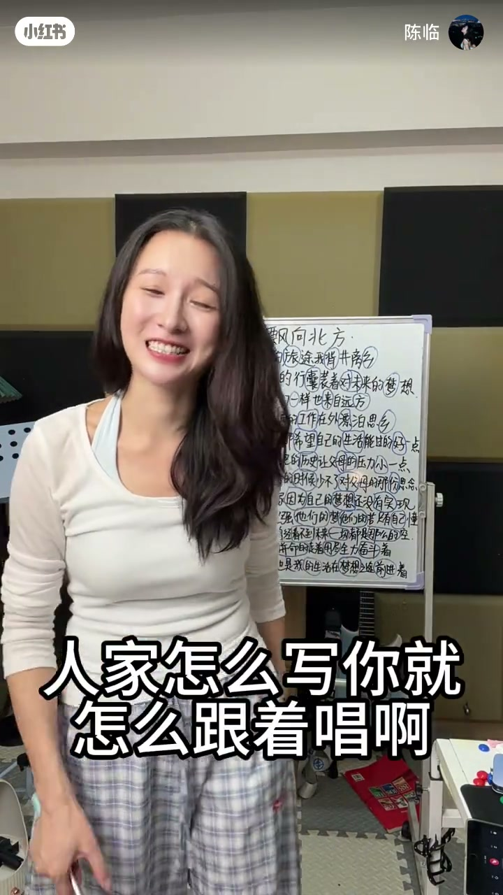
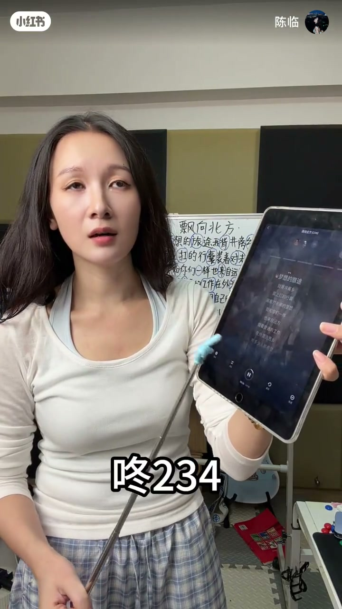
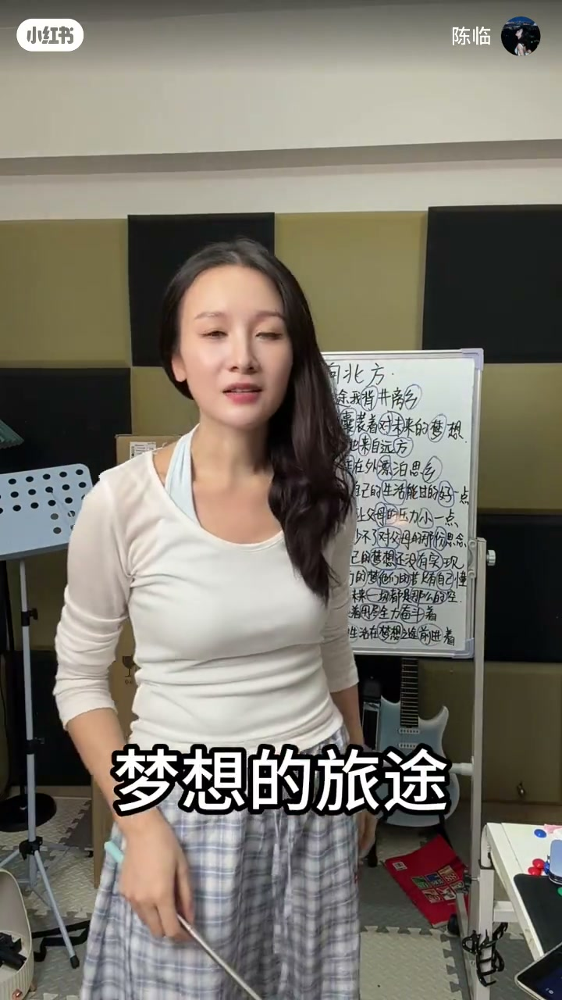
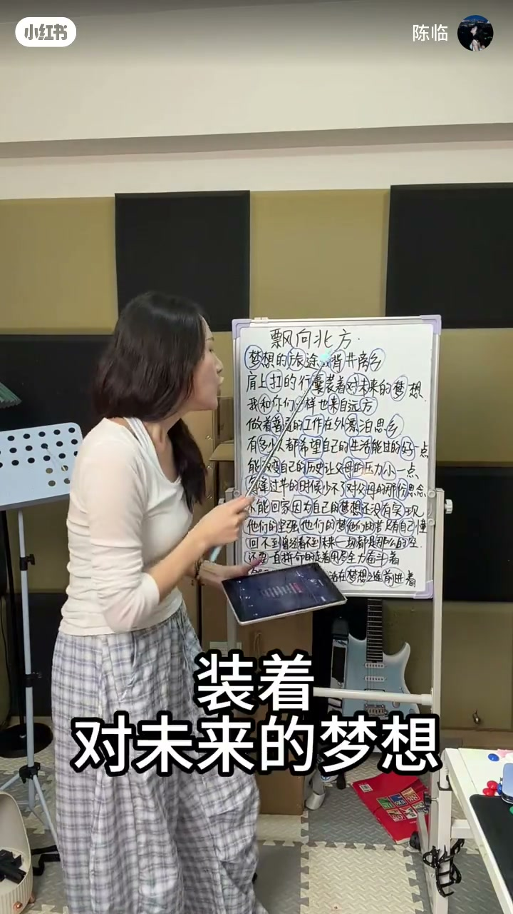
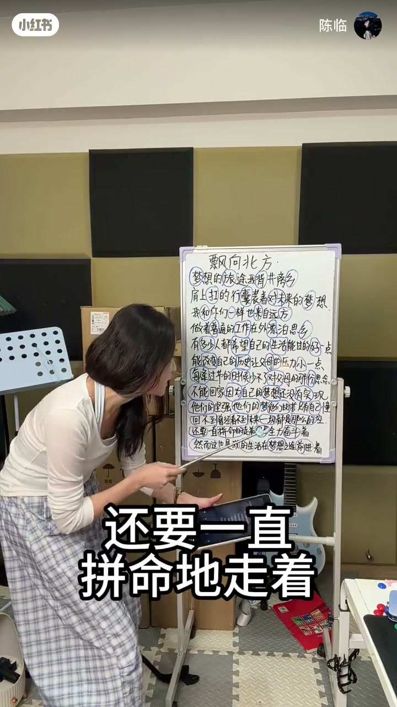

内容要点
知识结构
[00:00→01:00]
示范与问题
先唱示例，指出用流行歌腔唱说唱不合适。
[01:00→01:20]
腔体原则
像说话一样有劲；keep real。
[01:20→02:04]
数拍再唱
1 2 3 4进拍，用正确腔体重唱段落。
总结
说唱的腔底是「说话的劲」，不是抒情流行腔。
图文实录
先听问题
00:00 – 01:00
开场提问「说唱怎么唱」，随后示范并指出不能按流行歌方式去唱。

[00:12]开场：说唱怎么唱
Opening: how should you rap?

[00:37]示范段落：暴露流行腔问题
Demo lines: expose the pop-singing tone problem
腔体像说话
01:00 – 01:20
关键口播：改变腔底，要像说话一样有劲；并点出 keep real。
要keep real
你的腔底就要像说话一样
有劲儿

[01:02]原则：腔体像说话一样有劲
Principle: keep the tone forceful like speech
数拍落地
01:20 – 02:04
数拍后重唱「梦想的旅途…」段落，把原则落到节奏里。

[01:27]1 2 3 4 进拍重唱
Count 1 2 3 4, then re-rap on beat

[01:52]收束：用说话的劲完成段落
Close: finish the verse with speaking energy